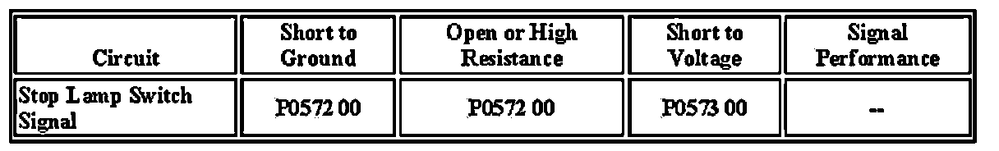

P0572
DTC P0572
Diagnostic Instructions
- Perform the Diagnostic System Check - Vehicle prior to using this diagnostic procedure.
- Review Strategy Based Diagnosis for an overview of the diagnostic approach.
- Diagnostic Procedure Instructions provides an overview of each diagnostic category.
DTC Descriptor
DTC P0572 00 : Brake Switch Circuit 1 Low Voltage
Diagnostic Fault Information

Circuit/System Description
The torque converter clutch (TCC) signal circuit is a high voltage input to the body control module (BCM), engine control module (ECM) and transmission control module (TCM). The ECM monitors the stop lamp switch circuit to detect when the brake pedal has been applied. The BCM monitors the stop lamp switch to determine when the brake pedal is applied. When the brake pedal is applied, the BCM sends a GMLAN serial data message to the ECM indicating that the brake pedal has been applied. The ECM senses a high voltage signal on the TCC signal circuit when the brake pedal has been applied.
Conditions for Running the DTC
- The ignition is ON.
- The engine is running.
- Battery voltage is greater than 11.5 volts.
Conditions for Setting the DTC
The ECM detects a low voltage signal on the TCC brake signal circuit when the serial data message from the BCM indicates the brakes are applied.
Action Taken When the DTC Sets
- The cruise control system becomes inoperative.
- The ECM stores the DTC to memory.
- The ECM will record the operating conditions at the time the diagnostic failed. The ECM stores this information in Failure Records.
Conditions for Clearing the DTC
- The condition responsible for setting the DTC no longer exists.
- A history DTC will clear once 40 malfunction-free ignition cycles have occurred.
Circuit/System Testing
1. Ignition OFF, disconnect the harness connector of the stop lamp switch.
2. Ignition ON, verify that a test lamp illuminates between the stop lamp switch voltage circuit terminal B and ground.
- If the test lamp does not illuminate, test the stop lamp switch voltage circuit for a short to ground or an open/high resistance. If the circuit tests normal, test or replace the RUN/CRANK PCB Relay.
3. Ignition OFF, disconnect the harness connectors of the BCM C5, ECM C1, and the TCM.
4. Verify that a test lamp does not illuminate between the stop lamp switch TCC brake signal circuit terminal A and B+.
- If the test lamp illuminates, test the TCC brake signal circuit for a short to ground.
5. Test for less than 1.0 ohm resistance between the stop lamp switch TCC brake signal circuit terminal A and the ECM connector C1 terminal 9.
- If greater than the specified range, test the TCC brake signal circuit for an open/high resistance.
6. If all circuits test normal, replace the stop lamp switch.
Component Testing
Relay Test
1. Ignition OFF, disconnect the RUN/CRANK PCB relay.
2. Test for 60-180 ohms of resistance between terminals 85 and 86.
- If the resistance is not within the specified range, replace the relay.
3. Test for infinite resistance between the following terminals:
- 30 and 86
- 30 and 87
- 30 and 85
- 85 and 87
- If less than infinite resistance, replace the RUN/CRANK PCB relay.
4. Install a 20-amp fused jumper wire between relay terminal 85 and 12 volts. Install a jumper wire between relay terminal 86 and ground. Test for less than 2.0 ohms of resistance between terminals 30 and 87.
- If greater than 2.0 ohms, replace the RUN/CRANK PCB relay.
Repair Instructions
Perform the Diagnostic Repair Verification after completing the diagnostic procedure.
Stop Lamp Switch Replacement